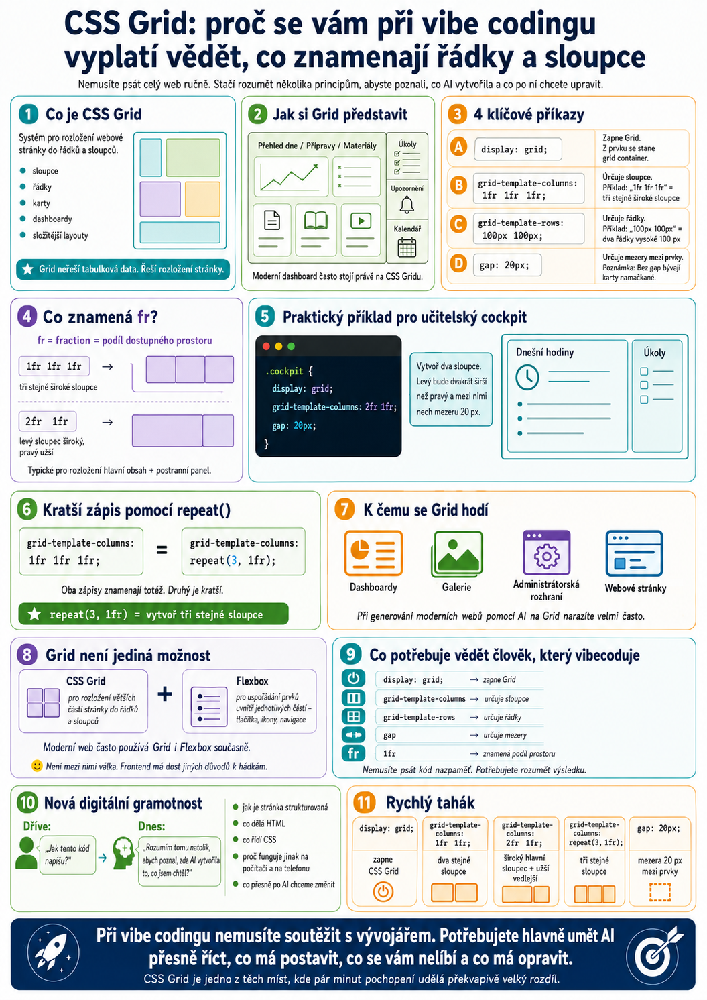

Při vibe codingu nemusíme umět napsat celý web od nuly. Umělá inteligence dnes zvládne vytvořit HTML, CSS i celé uživatelské rozhraní během několika minut. Přesto se vyplatí rozumět několika základním principům. Jedním z nich je CSS Grid – systém, který určuje, jak jsou jednotlivé části webové stránky rozmístěné do řádků a sloupců.
Když dnes zadáme AI například:
„Vytvoř mi přehledný dashboard se třemi kartami nahoře, hlavním obsahem vlevo a postranním panelem vpravo.“
model pravděpodobně použije právě CSS Grid.
Nemusíme přitom být frontendoví vývojáři. Stačí pochopit, co se pod několika základními příkazy skrývá.
Co je CSS Grid
CSS Grid je systém pro vytváření rozložení webové stránky.
Umožňuje rozdělit prostor například:
- do několika sloupců,
- do několika řádků,
- na různě široké části,
- na pravidelné karty,
- nebo na složitější kombinace jednotlivých bloků.
Můžeme si jej představit trochu jako tabulku.
Nejdříve vytvoříme pomyslnou mřížku a potom do jednotlivých částí umístíme obsah.
Na rozdíl od klasické tabulky však Grid není určen k zobrazování tabulkových dat. Slouží především k rozložení samotné stránky.
Například moderní dashboard může mít:
Postranní panel – Úkoly, Upozornění, Kalendář
A přesně podobné rozložení může CSS Grid řídit.
První důležitý příkaz: display: grid
Základ Gridu může vypadat překvapivě jednoduše:
.container {
display: grid;
}Tím prohlížeči říkáme:
„Tento prostor chci uspořádat pomocí mřížky.“
Prvek označený jako .container se stane takzvaným grid containerem.
Všechny jeho přímé vnitřní prvky se potom stávají grid items, tedy položkami mřížky.
Nemusíme tedy nastavovat každý prvek zvlášť.
Sloupce: grid-template-columns
Dalším krokem je určit, kolik chceme sloupců.
Například:
.container {
display: grid;
grid-template-columns: 1fr 1fr 1fr;
}Výsledkem budou tři stejně široké sloupce.
Zápis fr znamená fraction, tedy podíl dostupného prostoru.
Proto:
1fr 1fr 1frznamená tři stejně široké části.
Podobně můžeme napsat:
grid-template-columns: 2fr 1fr;Tentokrát vzniknou dva sloupce. První bude zabírat dvě třetiny prostoru a druhý jednu třetinu.
To je typické například pro dashboard:
Praktický příklad
Představme si aplikaci pro učitele.
Chceme mít vlevo velkou část s dnešními hodinami a vpravo menší panel s úkoly.
AI může vytvořit například:
.cockpit {
display: grid;
grid-template-columns: 2fr 1fr;
gap: 20px;
}Nemusíme umět CSS dokonale, abychom pochopili, co se děje.
V překladu tento kód znamená:
„Vytvoř dva sloupce. Levý bude dvakrát širší než pravý a mezi nimi nech mezeru 20 pixelů.“
A právě takové základní porozumění je při vibe codingu velmi užitečné.
Řádky: grid-template-rows
Stejným způsobem můžeme řídit také výšku jednotlivých řádků.
Například:
grid-template-rows: 100px 100px;znamená dva řádky vysoké 100 pixelů.
Ve skutečných aplikacích však často není nutné výšku řádků nastavovat přesně. Obsah může jejich velikost určit automaticky.
Proto při běžném vibe codingu narazíme na práci se sloupci pravděpodobně častěji než na přesné nastavování řádků.
Co znamená gap
Jedním z nejužitečnějších příkazů je:
gap: 20px;Určuje velikost mezery mezi jednotlivými prvky Gridu.
Bez ní mohou jednotlivé karty vypadat namačkaně vedle sebe.
S vhodným odstupem je rozhraní přehlednější.
Právě gap je krásným příkladem toho, proč nemusíme znát CSS nazpaměť.
Když se nám při vibe codingu výsledek nelíbí, můžeme AI jednoduše říct:
„Zmenši mezery mezi kartami.“
AI pravděpodobně změní právě tuto hodnotu.
Kratší zápis pomocí repeat()
Pokud chceme například tři stejné sloupce, můžeme místo:
grid-template-columns: 1fr 1fr 1fr;použít:
grid-template-columns: repeat(3, 1fr);Oba zápisy znamenají totéž.
Druhý je pouze kratší.
Při čtení kódu vytvořeného umělou inteligencí proto není důvod se zaleknout.
repeat(3, 1fr) jednoduše znamená:
„Vytvoř tři stejné sloupce.“
Proč je CSS Grid tak užitečný
Grid se velmi dobře hodí například pro:
- Dashboardy – karty s přehledy, statistikami, úkoly nebo upozorněními.
- Galerie – fotografie nebo obrázky rozmístěné do pravidelných řad.
- Administrátorská rozhraní – seznamy uživatelů, formuláře, nastavení a ovládací panely.
- Webové stránky – kombinace hlavního obsahu, navigace, postranních panelů a dalších sekcí.
Právě proto se s Gridem při generování moderních webových aplikací pomocí AI setkáme velmi často.
Grid není jediná možnost
Tady je dobré udělat jednu důležitou poznámku.
Někdy narazíme na tvrzení:
„Staré rozložení stránky je chaotické, Grid je moderní řešení.“
Je to trochu příliš zjednodušené.
Vedle CSS Grid existuje také Flexbox, který je rovněž moderní a velmi používaný.
V praxi se oba systémy často kombinují.
Zjednodušeně:
- CSS Grid je skvělý pro rozložení větších částí stránky do řádků a sloupců.
- Flexbox se často používá pro uspořádání prvků uvnitř jednotlivých částí – například tlačítek, ikon nebo položek navigace.
Moderní web proto klidně používá Grid i Flexbox současně.
Není mezi nimi válka. Naštěstí. Frontend má dost jiných důvodů k hádkám.
Co z toho potřebuje znát člověk, který vibecoduje
Pokud web vytváříme pomocí AI, nemusíme se učit kompletní CSS.
Velmi užitečné je ale poznat alespoň tyto čtyři věci:
display: grid;aktivuje Grid.grid-template-columns:určuje sloupce.grid-template-rows:určuje řádky.gap:určuje mezery mezi prvky.
A ještě jednu:
1fr znamená podíl dostupného prostoru.To už nám umožní rozumět poměrně velké části kódu, který nám AI vytvoří.
Nemusíme psát kód. Potřebujeme umět řídit výsledek
A právě tady se podle mě mění způsob, jakým má smysl učit se programování v době generativní AI.
Dříve bylo nutné vědět:
„Jak tento kód napíšu?“
Při vibe codingu je stále důležitější otázka:
„Rozumím tomu natolik, abych poznal, zda AI vytvořila to, co jsem chtěl?“
To je velký rozdíl.
Pokud například vidíme:
grid-template-columns: repeat(4, 1fr);a na obrazovce máme čtyři stejné karty, dokážeme si obě věci propojit.
A pokud chceme jen tři, nemusíme kód sami opravovat.
Stačí AI říct:
„Změň rozložení ze čtyř karet vedle sebe na tři.“
CSS Grid jako součást nové digitální gramotnosti
Vibe coding neznamená, že se už nemusíme nic učit.
Spíše se mění to, co má smysl se učit.
Nemusíme si pamatovat desítky CSS vlastností.
Je ale užitečné vědět:
- jak je webová stránka strukturovaná,
- co dělá HTML,
- co řídí CSS,
- co znamenají základní části layoutu,
- proč aplikace někdy dobře funguje na počítači, ale špatně na telefonu,
- a co po AI vlastně chceme změnit.
Člověk pak přestává být pouze zákazníkem generátoru kódu.
Stává se jeho zadavatelkou, kontrolorkou a návrhářkou řešení.
A přesně v tom podle mě spočívá skutečná síla vibe codingu.
Rychlý tahák
display: grid;→ zapne CSS Grid
grid-template-columns: 1fr 1fr;→ dva stejné sloupce
grid-template-columns: 2fr 1fr;→ široký hlavní sloupec + užší vedlejší
grid-template-columns: repeat(3, 1fr);→ tři stejné sloupce
gap: 20px;→ mezera 20 px mezi jednotlivými prvky
A to pro začátek úplně stačí.
Při vibe codingu nemusíme soutěžit s programátorem, který má za sebou deset let frontendu. Potřebujeme především rozumět konstrukci natolik, abychom mohli AI přesně říct, co má postavit, co se nám nelíbí a co má opravit.
A CSS Grid je jedno z těch míst, kde pár minut pochopení principu udělá překvapivě velký rozdíl.